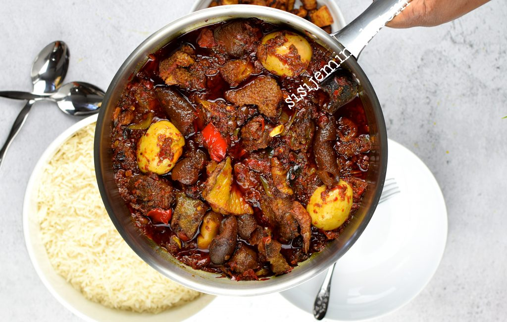

ATADINDIN RECIPE

Nigerian Atadindin (Buka Stew)
Nigerian Buka Stew recipe is one of the most loved in the country.
For this recipe, you can mix and match your peppers. You may choose to use a mixture of red and green bell peppers and you may also roast your peppers before blending, it’s up to you.
Ingredients
- Boiled Assorted Meats- Beef, Goat Meat, Cow Foot, Ponmo and Offals are ideal
- Vegetable Oil
- Chicken or Meat Broth
- 4 Big Bell Peppers (Tatashe)
- 4 Tomatoes
- 3 Scotch Bonnet Peppers (Ata rodo)
- 4 Chilli Peppers (Shombo)
- 2 Big Onions
- 1 Chopped Onion
- Bouillon Cubes
- 1 teaspoon Ground Pepper
- 2 cloves Garlic
- Salt to taste
Steps
-
Blend the bell peppers, tomatoes, and onion until smooth.
-
Heat the vegetable oil in a pot over medium heat.
-
Add the blended mixture to the pot and cook for 30 minutes, stirring occasionally.
- Add the minced garlic, salt, and ground pepper. Cook for another 15 minutes
-
Serve hot with rice or your preferred side.
Home